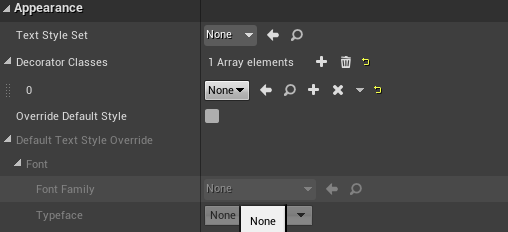

本篇文章用来记录使用UE4的UMG功能时遇到的问题和知识点。逐步了解UMG，UE4中的UI制作。
UMG
首先是对UMG这个概念的解读，Unreal Motion Graphics UI设计 是UE4提供的可以方便展示UI的设计框架，这个框架本质上还是使用Slate搭建的。
提到UMG也还会经常听到HUD这个词，在UE4中的HUD主要是指
- UE3那里继承来的Head-Up Display功能，在UE4中主要是用来Debug
- 向画布上添加图形图元的功能，表示文字的功能，还有简单的HitBox处理，用来检测鼠标等
但是由于这些功能UMG都可以干，所以UE4的HUD功能也不是需要一定要掌握了，HUD自身也有许多比如说执行才能被渲染不执行无法确认，文字表现不尽人意，旧版本的功能稳定性之类的问题。
点线图形之类图元的图形渲染UMG的OnPaint函数也可以实现。
而非常重要的Slate的话题，Slate是不依靠某个平台的UI框架，UE4的Editor和游戏中的UI都是使用Slate构建的。也就是说想要对UE4的Editor进行比较深度的扩展就一定要动Slate才行。但是网上关于Slate的文章有但是不是很多，需要仔细的挖掘和学习总结了。更多Slate的内容我想在ActionRPG那篇文章中记录。
回到UMG的话题，UMG是什么呢，又是为了什么而存在的呢？
UMG说白了就是对Slate进行了扩展方便在游戏中使用的框架
- 首先是继承了UObject使得Blueprint也可以方便使用
- 方便在UE4的Editor上确实渲染结果
- 简单的制作UI动画
Widget
使用UMG的话，应该第一个需要接触的就是Widget这个概念了，而实际上使用UMG的时候，基本上都要跟Widget打交道了。
Widget是UE4提供的部件，可以方便的使用蓝图进行操作，嵌套之类的都支持。
UE4提提供了许多有用的Widget部件，大概像这样
关于不同类型的Widget，我觉得很重要，有一些不知道的话不知道使用就得不偿失了，有时间一定要整理学习。
参考资料
给Widget添加动画
在Widget的蓝图中可以很方便的制作Widget的animation片段动画，当我们使用了上面的绑定方式之后，就可以使用人家准备好的UUserWidget::PlayAnimation函数进行动画的再生了，C++的方式还是BP的方式都很容易找到。
很好的参考文章
UUMGSequencePlayer
在对Widget动画的PlayAnimation函数的使用过程中发现这个类UUMGSequencePlayer貌似是一个很重要的概念，有时间需要好好了解一下。
UMG使用的Tips
BindWidget
先来一个邪门的，快速的建立C++和UMG Blueprint中Widget控件的联系
1 | UPROPERTY(BlueprintReadWirte, meta = (BindWidget)) |
Meta信息设置为BindWidget之后，在继承这个C++类的蓝图中声明一个同名同类型的控件，编译之后就建立了联系。
关于上面的邪门的知识，在使用过程中我遇见的坑，就是按照那个规则创建了控件之后蓝图编译总是报错，说是没有这个类型的控件，这个时候解决方案是，C++的那边修改一下变量名然后再编译。
###
不光是Widget中的Widget控件，Widget中的Animation也一样是可以使用类似上面的方式绑定的。1
2UPROPERTY(BlueprintReadWirte, meta = (BindWidgetAnim))
class UWidgetAnimation* WidgetAnimationA;
WidgetAnimation可以简单的在Widget中实现动画效果。
UMG中的一些控件介绍
UMG的RichTextBlock
UE4除了提供了提供了简单的文本显示的控件之外还提供了可以方便自定义格式的RichTextBlock。记录一下使用的方法。
RichTextBlock使用了UE4的DataTable来对其进行自定义和添加样式。使用DataTable，我们可以创建想要的Style和自定义的Decorator类。UE4内置了一个样例Decorator类：RichTextBlockImageDecorator类，可以参考。
想要使用自定义的文本格式之前先创建一个DataTableAsset方便我们使用。在创建DataTable的时候有两种行的结构供我们选择：
- Rich Image Row
- Rich Text Style Row
由名字就可以注意到一个是用来显示图片的一个是用来显示文本的。首先是使用文本的栗子：

可以观察到添加了一个默认行，（当然Default的名字是要自己修改的），作为使用的默认样式。貌似第一行的行名默认就是Default，遵循这个规则。
然后是要把这个格式应用到Widget的RichTextBlock上去。找到自己创建的RichTextBlock 控件，然后找到Appearence设置好我们创建的TextStyle：
这里需要注意的是检查一次字体的格式有没有好好设置，要不然会显示不了文字。
做完上面，我们就简单的获得了一个自定义的雏形。
但是我们想要在一个TextBlock中有多个文字样式，那么就需要在上面我们制作的DataTable中添加新的样式数据并应用它。添加一个新的格式;
然后应用它：
就是<RowName>Text</>的格式，把想要应用的文本包围起来就可以实现了。
关于更多的RichText的使用，还有上面提到的Decorator类的内容，需要找时间整理学习。
最近关于UE4的本地化策略(Localization)调查了很多，其中也涉及到了很多关于这个RichTextBlock的内容。
对上面的内容进行一点点的总结，首先是上面的Appearence需要我们指定的TextStyleSet，在这里我们可以指定文本的格式，字体什么的设定内容，到这里为止我们只要创建一个DataTable，Row结构体是RichTextStyleRow的表填入相应的字体信息，增加各种行的信息，就可以在RichTextBlock中实现各种字体的效果。
但是如果想在这个基础上添加图片等其他的数据则需要我们对Decorator进行深入的使用。
首先是最简单的使用UE4原本提供的图片格式进行简单的应用，即对上面的RichImageRow表的内容进行简单的利用。为此我们需要为这个RichTextBlack添加DecoratorClass。

UE4为我们提供了式样案例RichTextBlockImageDecorator这个类，之后将会对这个类的源码实现进行学习。其实实现的方法很简单，就是新建一个BP继承RichTextBlockImageDecorator，然后把这个新建的类指定到上面RichTextBlock的DecoratorClass中。
然后打开这个BP，会发现有一个Appearence->ImageSet的项目，这里指定我们上面创建的RichTextStyleRow的DataTable。在RichText中使用<img id="Row_Name"/>这样的标签就可以指定表中的对应的行的图片进行显示了。
到这里的参考资料
以上是简单的为RichTextBlock添加图片实现，如果要对Decorator进行自定义则需要参考这个RichTextBlockImageDecorator示例源码实现了。
新建我们自己的Decorator
首先是对UE4提供的RichTextBlockImageDecorator的示例源码进行解析。
URichTextBlockDecoratorFRichTextDecorator